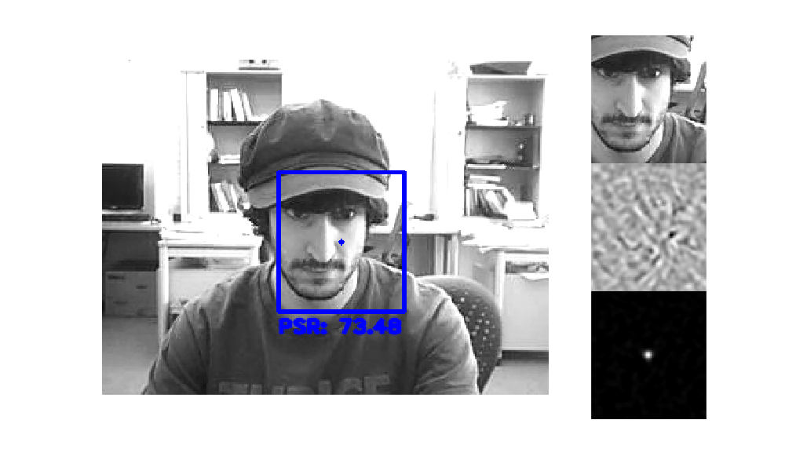

Correlation-based Tracking using MOSSE Filters
Draw rectangles around objects with a mouse to track them. The sample uses the RectSelector and MOSSETracker classes.
Sources:
function mosse_demo(vid) % video file, and a default target to track [x,y,w,h] win = []; if nargin < 1 if true vid = fullfile(mexopencv.root(), 'test', 'faceocc2.webm'); win = [118 57 82 98]; elseif true vid = fullfile(mexopencv.root(), 'test', 'dudek.webm'); win = [123 87 132 176]; else vid = fullfile(mexopencv.root(), 'test', 'david.webm'); win = [129 80 64 78]; end if exist(vid, 'file') ~= 2 [~,name,ext] = fileparts(vid); url = 'https://cdn.rawgit.com/opencv/opencv_extra/3.3.1/testdata/cv/tracking/'; urlwrite([url, name, '/data/', name, ext], vid); end elseif isempty(vid) if ~mexopencv.isOctave() && mexopencv.require('vision') vid = which('visionface.avi'); win = [275 125 75 100]; else vid = 0; end end % open video feed, and get first frame cap = cv.VideoCapture(vid); pause(1); assert(cap.isOpened(), 'Failed to open video'); frame = cap.read(); assert(~isempty(frame), 'Failed to read frames'); gray = cv.cvtColor(frame, 'RGB2GRAY'); % prepare plot paused = false; viz_state = true; if viz_state figure('Position',[100 200 1000 600]) subplot(1,4,1:3) hVis = []; end hImg = imshow(frame); % initialize trackers array trackers = {}; if ~isempty(win), onRect(win); end % create ROI region selector if ~mexopencv.isOctave() onHelp(); roi = RectSelector(hImg); roi.callback = @onRect; else %HACK: RectSelector not Octave compatible %HACK: function handle to nested function not supported in Octave roi = struct('isDragging',@()false); end % listen to keyboard input if ~mexopencv.isOctave() %HACK: function handle to nested function not supported in Octave set(ancestor(hImg,'figure'), 'WindowKeyPressFcn',@onType); end % main loop while ishghandle(hImg) playing = ~paused && ~roi.isDragging(); if playing % read new frame frame = cap.read(); if isempty(frame), break; end gray = cv.cvtColor(frame, 'RGB2GRAY'); % track all targets for i=1:numel(trackers) trackers{i}.update(gray); end end out = frame; % draw tracked objects for i=1:numel(trackers) out = trackers{i}.draw_object(out); end % show state from last tracker if viz_state && ~isempty(trackers) [vis, kernel, resp] = trackers{end}.visualize_state(); vis = cat(1, vis, kernel, resp); if isempty(hVis) subplot(144) hVis = imshow(vis); else set(hVis, 'CData',vis); end end % display result set(hImg, 'CData',out); if playing drawnow; else pause(0.1); % slow down a bit if paused end end cap.release(); if isobject(roi), delete(roi); end % --- Callback functions --- function onRect(rect) %ONRECT Callback for ROI selector % % onRect(rect) % % ## Input % * __rect__ selected rectangle [x,y,w,h], or empty % if isempty(rect) || cv.Rect.area(rect) < 3, return; end % track new target disp('Adding target...') trackers{end+1} = MOSSETracker(gray, rect); % un-pause paused = false; end function onType(hfig, e) %ONTYPE Event handler for key press on figure switch e.Key case {'q', 'escape'} close(hfig); case 'h' onHelp(); case {'space', 'p'} disp('Toggle pause...'); paused = ~paused; case {'c', 'r'} disp('Clearing trackers...'); trackers = {}; if viz_state delete(ancestor(hVis,'axes')); hVis = []; end end end function onHelp() %ONHELP Display usage help dialog h = helpdlg({ 'Select object(s) to track using the mouse.' 'Hot keys:' ' q - quit' ' h - help' ' p - pause' ' c - clear targets' }); % wait for user to accept dialog set(h, 'WindowStyle','modal'); waitfor(h); end end
Adding target...